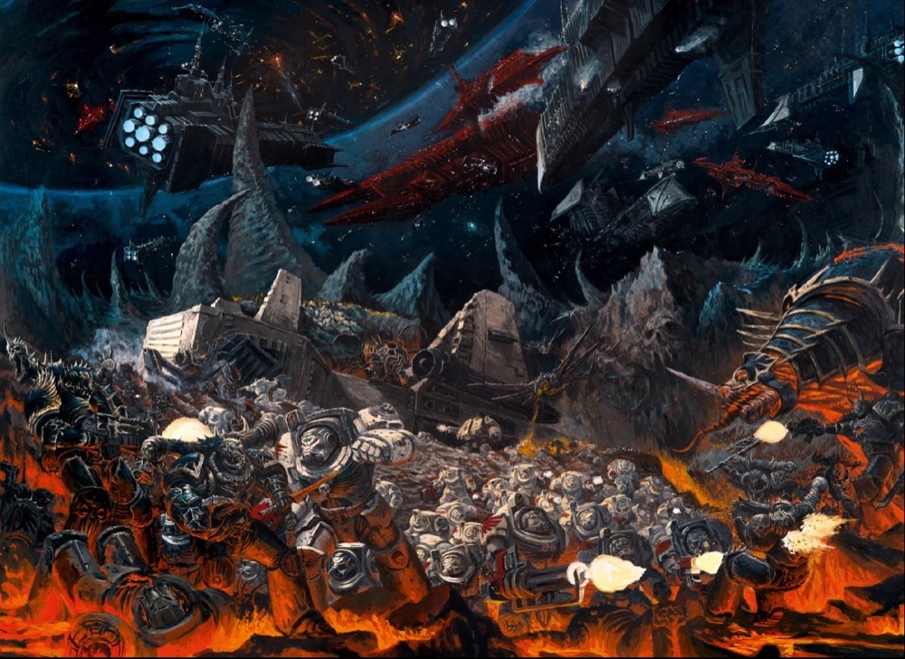

List of Black Crusades
| List of Black Crusades | |
|---|---|
| The thirteen Black Crusades, 781.M31 to 999.M41 | |
 Warriors of the Black Legion on the march during the Thirteenth Black Crusade Artwork © Games Workshop | |
| Number | Thirteen |
| First | 781.M31, the First Battle of Cadia |
| Last | 999.M41, the Fall of Cadia |
| Led by | Abaddon the Despoiler, Warmaster of Chaos |
This is a list of the Black Crusades, the thirteen great invasions of the Imperium of Mankind launched from the Eye of Terror by the Chaos Legions under the command of Abaddon the Despoiler. The Administratum's list was revised after the Fall of Cadia, and it is the version used here. Dates before the 36th millennium are approximate, and the names of some crusades are known only from the surviving copies of the Cadian chronicle.[1]
The first crusade began the war that the Horus Heresy had left unfinished, and the thirteenth ended with the loss of the Cadian Gate. Each Black Crusade had a stated purpose, but Imperial officers who studied the series concluded that all thirteen were parts of one plan. The table gives the number, date, principal theatre and outcome of each crusade.[1]
The thirteen Black Crusades
[edit]| No. | Dates | Main target | Result |
|---|---|---|---|
| 1st | 781.M31 | Cadian Gate, Segmentum Obscurus, known as the First Battle of Cadia | The campaign failed, but Cadia was resettled and fortified as a permanent garrison. |
| 2nd | 597.M32 | Belis Corona Sector; the shipyards of Belis Corona | Dozens of cruisers under construction were destroyed. The Traitors withdrew before a response was made. |
| 3rd | 909.M32 | The Cadian Gate and the Shrine World of Gerstahl | The Daemon Prince Tallomin was driven back into the Warp by the Space Wolves, and the relics of Saint Gerstahl were destroyed. |
| 4th | 001.M34 | El'Phanor War, against the Citadel of Kromarch | The citadel was stormed and the House of Kromarch exterminated. |
| 5th | 723.M36 | Elysia Sector and the world of Tarinth | The Warhawks and the Venerators were destroyed at Kasyr Lutein. |
| 6th | 901.M36 | Forge World of Arkreach | Abaddon defeated the Sons of the Eye, a splinter warband, and killed its leader. |
| 7th | 811.M37 | Many sectors; the Ghost War of concealment, and the world of Mackan | Years of raids and false trails followed. At Mackan the Blood Angels fought the Black Legion. |
| 8th | 999.M37 | Segmentum Obscurus | A ritual campaign dedicated to Tzeentch. The Inquisition discovered the pattern and broke it after many worlds had been saturated with death. |
| 9th | 537.M38 | Antecanis and Cancephalus | Monarchhive was destroyed, and the naval fortress of Cancephalus was drawn into a seventeen-year war. |
| 10th | 001.M39 | Helican Sub-sector, Scarus Sector | A joint campaign with Perturabo. The Iron Warriors besieged Medusa, and the Traitors withdrew with Medusa's defence plans. |
| 11th | 301.M39 | The Cardinal World of Relorria | A navigational error placed the fleet in the path of an Ork Waaagh!. The Black Legion fought it to a standstill and withdrew. |
| 12th | 139.M41 | Gothic Sector; the Blackstone Fortresses | The attempt to seize the Blackstone Fortresses failed. Abaddon escaped with at least two of them, as the Gothic War ended in 160.M41. |
| 13th | 999.M41 | The Cadian Gate; the Gothic, Belis Corona and Agripinaa systems | Cadia fell, its pylons were destroyed, and the Great Rift split the Imperium in two. |
Observations on the series
[edit]Imperial officers recorded a pattern in the series. The early crusades were large and costly, and the Imperium answered them by building. After the first, Cadia was resettled, and after the second its cities were rebuilt in the defensive plan they kept to the end. The middle crusades were smaller and more varied, and several had purposes of their own.[1]
The Inquisition came to believe that all thirteen were part of one plan. Inquisitor Horst, who followed the Twelfth, wrote that Abaddon was testing the defences of the Imperium to learn which would hold. The Despoiler's name for the plan, recovered from a captured Black Legion cipher, was the Crimson Path.[2]
Black Crusades after the Fall of Cadia
[edit]No Black Crusade of the older kind has been recorded since the Fall of Cadia. The Cadian Gate is now a region of broken worlds around a shattered planet, and the Black Legion ranges across the Segmentum Obscurus and into the Imperium Nihilus.[3]
See also
[edit]Notes
[edit]References
[edit]- ^ a b c Mitchell, Sandy. Cain's Last Stand (novel). Black Library. Rennie, Gordon. Execution Hour (novel). Black Library.
- ^ Rennie, Gordon. Shadow Point (novel). Black Library. Codex: Chaos Space Marines (6th Edition), pp. 22-23, 25. Games Workshop.
- ^ Warhammer 40,000 Rulebook (6th Edition), pp. 177, 230-231. Games Workshop. Warhammer 40,000 Rulebook (5th Edition), pg. 148. Games Workshop.